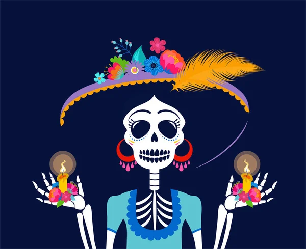
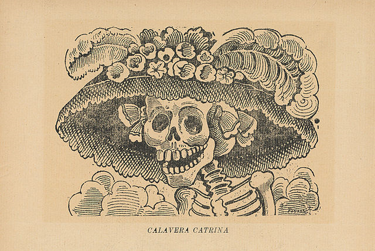
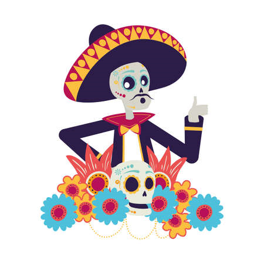

Catrinas y Catrines
Concurso a la mejor catrina y mejor catrin
Participa en el concurso de disfraces de catrinas y catrines que se llevara a cabo en el recorrido especial por dia de muertos el 2 de noviembre. El registro
es en la pagina de SIC del Gobierno de Mexico Museo Panteon de belen . El cupo es limitado por lo que deberas darte prisa.


Los elementos que se tomaran en cuenta para la evaluacion de el disfraz de catrina son los siguientes:
- Calidad de los objetos del disfraz
- Maquillaje
- Originalidad
Para el disfraz de catrin se tomaran en cuenta los siguientes puntos:

- Presentacion
- Elementos del disfraz
- Maquillaje
Los premios seran los siguientes:
- er lugar: un viaje para 2 personas con todo pagado a cancun.
- do lugar: 1000$ pesos en efecto.
- er lugar: un reconocimiento por parte del museo.
!No te quedes atras y participa!
Presentacion
Concurso de relatos
Especial dia de muertos